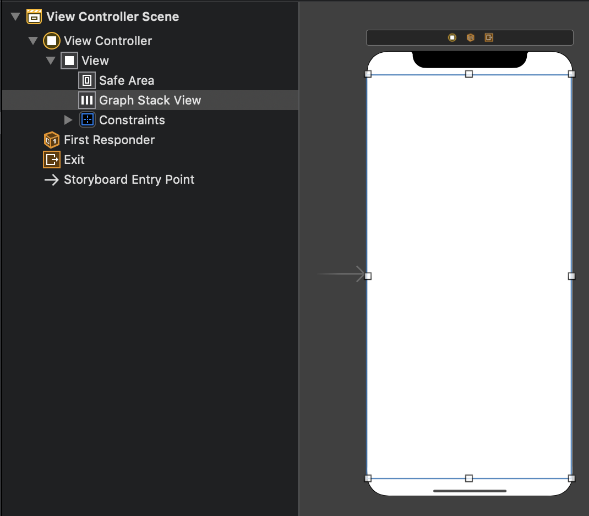
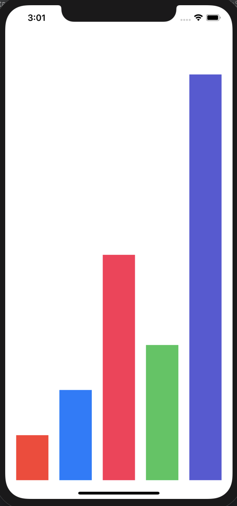
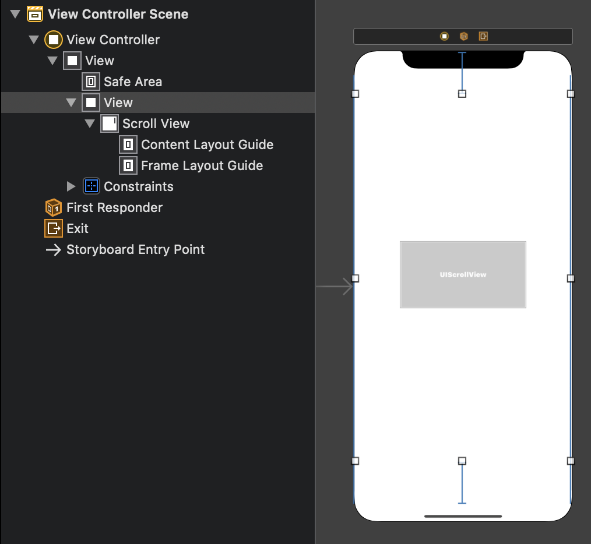
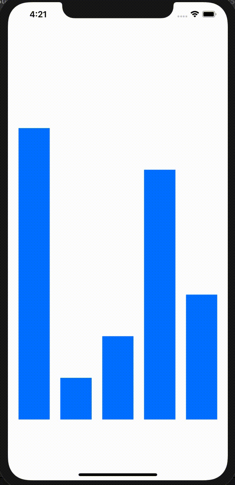
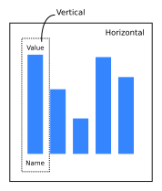
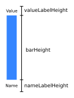
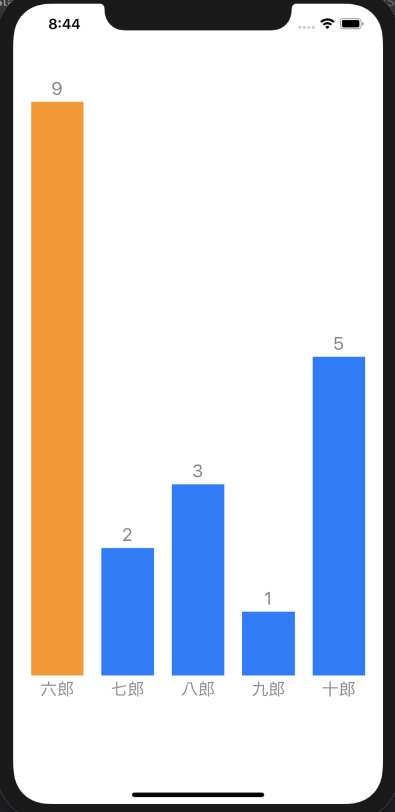

前に頑張ってCoreGraphicsを使って棒グラフを描いたが、やはりViewを棒に見立てて扱った方が良さそうだ。考えられる利点は次の3つ。
- タップ時に何かアクションを起こせる。例えば、棒グラフをタップしたら、そのデータに関する詳細ページに飛ぶ、などの処理が実装できる。
- アニメーションについてのコードを描きやすい。例えば棒グラフの高さを0から伸ばしていくアニメーションが実現できる。
- StackViewで棒を管理すれば、棒のサイズや棒同士の間隔を自動で設定してくれる
これはやるしかない。
基本的にはこちらを参考にしながら進めていく。
UIStackViewをコード上で使う基本
とりあえず使い方を確認する。
Main.storyboard
こんな感じにする。

ViewController.swift
class ViewController: UIViewController {
let colors: [UIColor] = [.systemRed, .systemBlue, .systemPink, .systemGreen, .systemIndigo]
let percentages: [CGFloat] = [0.1, 0.2, 0.5, 0.3, 0.9]
@IBOutlet weak var graphStackView: UIStackView!
override func viewDidLoad() {
super.viewDidLoad()
// Do any additional setup after loading the view.
graphStackView.distribution = .fillEqually
graphStackView.alignment = .bottom
graphStackView.spacing = 20
graphStackView.isLayoutMarginsRelativeArrangement = true
graphStackView.layoutMargins.left = 20
graphStackView.layoutMargins.right = 20
for (color, percentage) in zip(colors, percentages) {
addBar(bgColor: color, percentage: percentage)
}
}
private func addBar(bgColor: UIColor, percentage: CGFloat ) {
let view = UIView()
let height = graphStackView.frame.height * percentage
view.backgroundColor = bgColor
view.heightAnchor.constraint(equalToConstant: height).isActive = true
graphStackView.addArrangedSubview(view)
}
}
こんなに短いコードで次のような棒グラフが表現できる。

説明
次の事実を覚えておく:
stackView.axis: 要素の並び方向を決める。.verticalか.horizontalを選べる。Storyboard上で追加する場合はいじらない。以下は全てhorizontalでの説明。stackView.distribution: 要素の並べ方を決める。.fillEquallyにしておくと、全ての要素の幅が同じになるように並べられる。stackView.alignment: 要素の寄せ方向を決める。デフォルトは.fillなので、これをいじらないと高さがみんな一緒になってしまう。stackView.addArrangedSubview(_:): stackViewの要素を追加するときはこれを利用する。
今回調べていて知った、stackViewに限らない知見:
- Viewの余白を設定するには、
layoutMarginsを用いる。設定を反映するためにはisLayoutMarginsRelativeArrangementをtrueにしておく必要がある。ちなみにこれはStoryboard上でも設定できる。
- 前回は
scale関数を定義していたが、レイアウトが単純な場合は上のようにpercentageで定義しても良さそう。
目標
前回とつける機能はほぼ同じ。
- 横スクロールできる棒グラフを作る。
- 1ページに表示する棒は最大5本とする。
Main.storyboard

ViewController.swift
ScrollViewからのOutlet接続を作る。viewDidLoadに以下の記述を追加する。
scrollView.frame = CGRect(
x: 0,
y: 0,
width: scrollView.superview!.frame.width,
height: scrollView.superview!.frame.height
)
Modelの準備
棒グラフ用のモデルを作成する。
struct BarChartModel {
var percentage: CGFloat
var value: Int
var name: String
var color: UIColor
}
前回のユーティリティ関数を今回も使う。
extension Array {
func chunked(into size: Int) -> [[Element]] {
return stride(from: 0, to: count, by: size).map {
Array(self[$0 ..< Swift.min($0 + size, count)])
}
}
}
ViewController内にデータとそのformatterを用意する。
var dataSource = [
(7, "太郎"), (1, "次郎"), (2, "三郎"), (6, "四郎"), (3, "五郎"),
(9, "六郎"), (2, "七郎"), (3, "八郎"), (1, "九郎"), (5, "十郎"),
(1, "十一郎"), (1, "十二郎"), (6, "十三郎")
]
lazy var data: [[BarChartModel]] = format(dataSource)
lazy var maxVal: Int = dataSource.map({ $0.0 }).max() ?? -1
private func format(_ data: [(Int, String)]) -> [[BarChartModel]] {
return data.map({ datum in
let (val, name) = datum
let percentage = CGFloat(val) / CGFloat(maxVal)
let color: UIColor = val == maxVal ? .systemOrange : .systemBlue
return BarChartModel(percentage: percentage, value: val, name: name, color: color)
}).chunked(into: 5)
}
BarChartViewの準備
BarChartView.swiftを作成する。ViewControllerに書かれていたStackViewの内容を、BarChartViewとしてまとめる。axisはデフォルトで.horizontalっぽいが、念のため明示しておく。
class BarChartView: UIStackView {
init(frame: CGRect, barChartItems: [BarChartModel]) {
super.init(frame: frame)
axis = .horizontal
distribution = .fillEqually
alignment = .bottom
spacing = 20
isLayoutMarginsRelativeArrangement = true
layoutMargins.left = 20
layoutMargins.right = 20
for item in barChartItems {
addBar(bgColor: item.color, percentage: item.percentage)
}
}
required init(coder: NSCoder) {
fatalError("init(coder:) has not been implemented")
}
private func addBar(bgColor: UIColor, percentage: CGFloat ) {
let view = UIView()
let height = frame.height * percentage
view.backgroundColor = bgColor
view.heightAnchor.constraint(equalToConstant: height).isActive = true
addArrangedSubview(view)
}
}
ページ追加
メソッドconfigureScrollViewを追加する。
override func viewDidLoad() {
super.viewDidLoad()
// Do any additional setup after loading the view.
scrollView.frame = CGRect(
x: 0,
y: 0,
width: scrollView.superview!.frame.width,
height: scrollView.superview!.frame.height
)
configureScrollView()
}
private func configureScrollView() {
scrollView.isPagingEnabled = true
let contentsView = UIView(frame: CGRect(
x: 0,
y: 0,
width: scrollView.frame.width * CGFloat(data.count),
height: scrollView.frame.height
))
scrollView.addSubview(contentsView)
scrollView.contentSize = contentsView.frame.size
for (i, barChartItems) in data.enumerated() {
let widthPercentage = CGFloat(barChartItems.count) / CGFloat(data[0].count)
let frame = CGRect(
x: scrollView.frame.width * CGFloat(i),
y: 0,
width: scrollView.frame.width * widthPercentage,
height: scrollView.frame.height
)
let view = BarChartView(frame: frame, barChartItems: barChartItems)
contentsView.addSubview(view)
}
}
前回の相違点は次の2つ。
- ページViewの
frameをViewController側でやっている
- 棒の本数が5本未満だと棒が太くなってしまうため、
widthPercentageでBarChartViewの横幅を調整している:
let widthPercentage = CGFloat(barChartItems.count) / CGFloat(data[0].count)
let frame = CGRect(
x: scrollView.frame.width * CGFloat(i),
y: 0,
width: scrollView.frame.width * widthPercentage,
height: scrollView.frame.height
)
この時点でアプリを起動すると、次のようになる。

ラベル追加
horizontalの中にverticalを入れ子にすることで実現できる。

次のような配分にする。要素が同じ高さでない場合、distributionはfillにする。

varLabelHeightとnameLabelHeightは固定である。これと親ビューの高さから、barHeightが計算できる。これを念頭に置きながらConstraintを設定していく。
BarChartView.swift
クラス先頭に定数を定義する。
let fontSize: CGFloat = 20
let textPad: CGFloat = 10
addBarContainerを定義する。上の通りに実装する。
barHeightの計算方法に注目。おかしなことをするとConstraintでエラーを吐くので注意。
private func addBarContainer(of item: BarChartModel) {
let valueTextHeight: CGFloat = fontSize + textPad
let nameTextHeight: CGFloat = fontSize + textPad
let barHeight: CGFloat = (frame.height - valueTextHeight - nameTextHeight) * item.percentage
let barContainer = UIStackView()
barContainer.axis = .vertical
barContainer.alignment = .fill
barContainer.distribution = .fill
let valueLabel = makeBarLabel(text: "\(item.value)", fontSize: fontSize, height: valueTextHeight)
barContainer.addArrangedSubview(valueLabel)
let barView = UIView()
barView.backgroundColor = item.color
barView.heightAnchor.constraint(equalToConstant: barHeight).isActive = true
barContainer.addArrangedSubview(barView)
let nameLabel = makeBarLabel(text: item.name, fontSize: fontSize, height: nameTextHeight)
barContainer.addArrangedSubview(nameLabel)
addArrangedSubview(barContainer)
}
addBarだったものをaddBarContainerに変更する。
for item in barChartItems {
addBarContainer(of: item)
}
こんな感じになる。

軸(水平線)の描画
棒グラフの下に水平線を描きたい。
こちらを参考にする。ものすごく細い長方形をlayerとして用意して、それを棒の下に配置すれば良い。
BarChartViewのinit関数の末尾に以下の記述を追加する。
let border = CALayer()
let borderWidth: CGFloat = 1
border.backgroundColor = UIColor.darkGray.cgColor
border.frame = CGRect(
x: 0,
y: frame.height - (borderWidth/2 + fontSize + textPad),
width: frame.width,
height: borderWidth
)
layer.addSublayer(border)
次回予告
- リファクタリング -
BarContainerを別クラスに分ける
- タッチのイベント捕捉
- アニメーション
参考